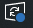
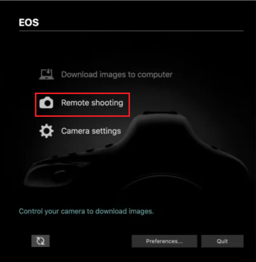
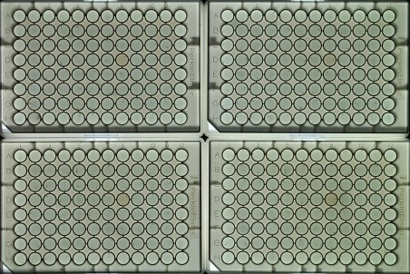
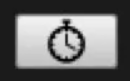

Image Acquisition
Using our custom-built imaging cabinets, we can take pictures of treated zebrafish larvae while they are exposed to visual and acoustic stimuli. These images can be further analyzed to quantify larval behaviors.
Materials
EOS Utility - Camera Software
PowerPoint presentation with behavioral stimuli
30 GB of free space
If you get stuck at any point, please refer to our Troubleshooting and FAQ section.
Before you begin
-
Check that the laptop you'll be using has at least 30 GB of free space Why? .
-
If your PowerPoint is playing sound, make sure the speakers are plugged in and the volume is set to 100%.
-
Check that the laptop is set to never go to sleep and never go to screensaver mode.
Power and sleep settings should be set to never go to sleep. How to check power settings.
-
Check that there are no updates pending. Windows updates will start on their own and interrupt your experiment.
The easiest way to check for updates is by going to the bottom right corner and clicking the updates icon . Other ways to check for updates.
-
Make sure to turn on the heating pad for the cabinet you will be using. They are automatically turned on when you plug them in. Each heating pad is labeled with a number corresponding to its heating cabinet.
-
Each imaging cabinet is equipped with four 50mL tubes filled with DI water and a small container with a sponge filled halfway with DI water. Check the water levels before you start your experimentWhy? .
Image Acquisition Protocol
-
Each imaging laptop should have the EOS camera software installed before starting image acquisition. If installed correctly, the software should open when the camera is turned on and plugged in. You can also open the software by clicking on the EOS Utility icon on the Desktop, or searching for the application "EOS Utility" on the bottom left search bar.

-
Click on Remote shooting.
-
Confirm that the camera settings are as outlined on the paper instructions next to the laptop.
-
Place your plates on the glass stage of the imaging cabinet. The bottom left of the plate has a notch that should be placed towards the speakers. Once you're done, gently close the cabinet door.
Make sure you place the plates as straight as possible. Tilted plates result in tilted images which are difficult to analyze.
-
Open the PowerPoint that you will be using for the experiment and start the presentation.
-
In the EOS Utility software, click on Live View Mode to get a live view of the camera. Double check the placement of your plates (See image below).

Make sure the PowerPoint is being presented and stretches through the whole stage. If you are using PowerPoint RC070619, you should see horizontal red lines touching all 4 plates and no black or dark borders should be visible.
-
Close Live View Mode. Set up the PowerPoint and the EOS Utility software side by side.
-
Click on the timer icon in the EOS Utility software . Set the delay time to 00:10. Check the interval timer shooting option and set the shooting interval to 00:06 and the shots to 1800. Then, press start.
-
Advance the PowerPoint to the next slide (If you are using PowerPoint RC070619 it should be a blank slide with a spinning black line on the top left).
Make sure the PowerPoint window is active (i.e. is the last thing you click on). The PowerPoint will not present unless it is the active window.
Cleaning Up
-
Once you are done running your experiment, euthanize your larvae by following our IACUC protocol (an updated physical copy is located next to the incubators).
-
Dispose of the plates by putting them in the red biohazardous waste container.
-
Move your data from the laptop to:
- A personal thumb drive or portable drive
- Your R-Drive folder
-
Once you've moved your data, please delete it from the laptop to free up the space for someone else's experiment.
-
Shut down the projector, turn off the camera, and unplug the heating pad.
1. Our usual 3-hour protocol captures one image every 6 seconds, resulting in 1800 images. This equates to ~15 GB of data.
2. The heat from the projector and the heating pad will cause the water in the wells to evaporate. In order to maintain proper humidity levels and prevent evaporation, we have placed water containers in each cabinet.